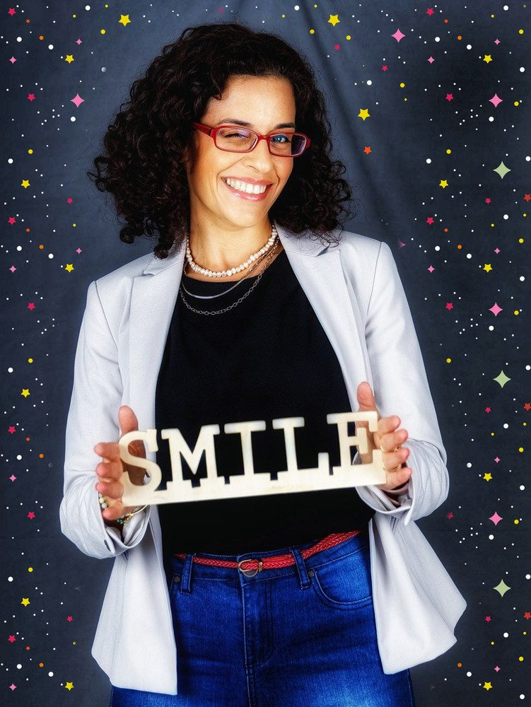

מעבירה את זה הלאה!

בשנת 2009 התחלתי את דרכי בתחום ה- #הוראה_המתקנת.
כבר אחרי השיעור הראשון שלימדתי,
ידעתי שזה - זה!
בדיוק מה שאני רוצה לעשות בחיי!
אחרי 13 שנים של ניסיון בתחום
כמורה שכירה ובהמשך כעצמאית בעלת עסק,
מפגש עם תלמידים והורים רבים,
גיוס צוות - העסקה והדרכת מורות,
התמודדות עם מגוון סוגים של קשיים לימודיים,
אתגרים, הצלחות, פיתוחים עסקיים
וטעויות לאורך הדרך שעליהן שילמתי לא מעט,
(אבל למדתי מהן כל כך הרבה.. )
אני יכולה לומר בביטחון ובלב שלם,
שיש לי כל כך הרבה להעביר הלאה!
החזון שלי הוא שמורות להוראה מתקנת
יקבלו #ליווי_והדרכה_מקצועית בתחילת דרכן!
מישהי לרוץ איתה,
לקבל חיזוק, תמיכה, הקשבה
וחידודים פרקטיים במעבר הזה,
שבין סיום הלימודים והעבודה תכלס בשטח!
כל אחת תסלול את הדרך שלה בסופו של דבר,
אשמח להצטרף אליך בתחילתה,
להיות שם בשבילך, לדייק אותך
ולחסוך לך טעויות.
מוזמנת ליצור איתי קשר
סיון 052-8219395
מנהלת #להצליח_עם_חיוך
#אבחון_דידקטי ופיתוח כישורי למידה
#ליווי_מקצועי_למורות_להוראה_מתקנת